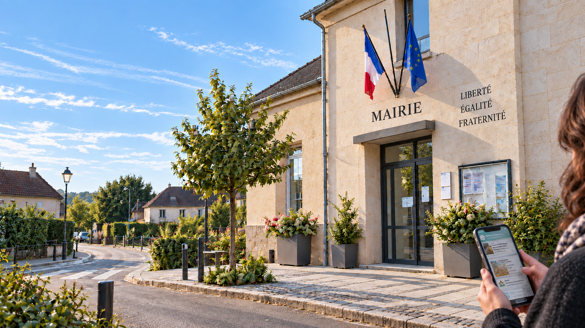
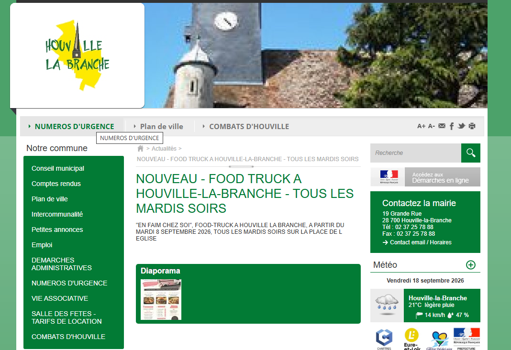
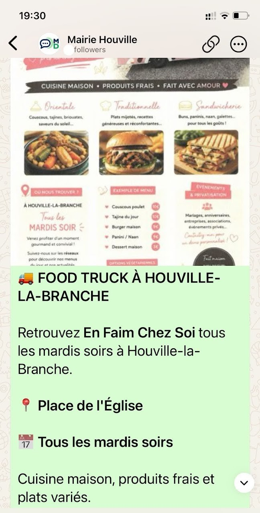
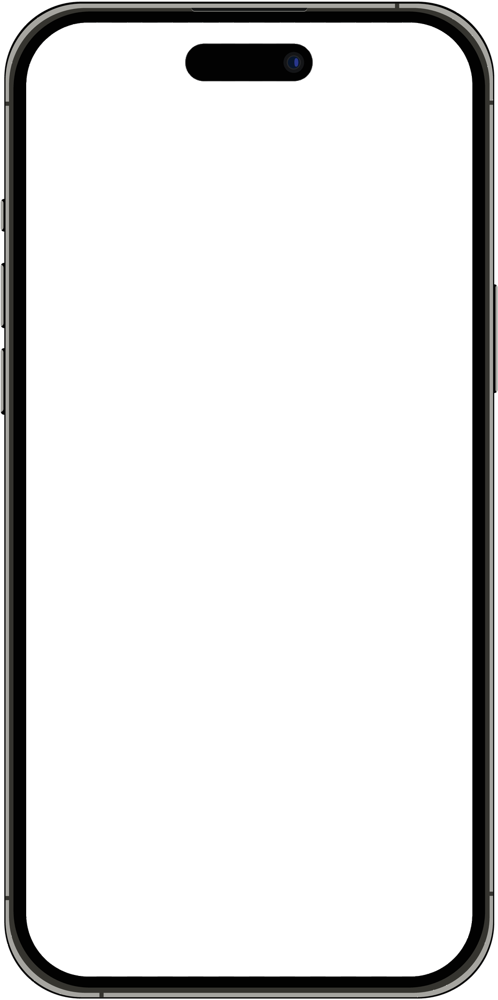
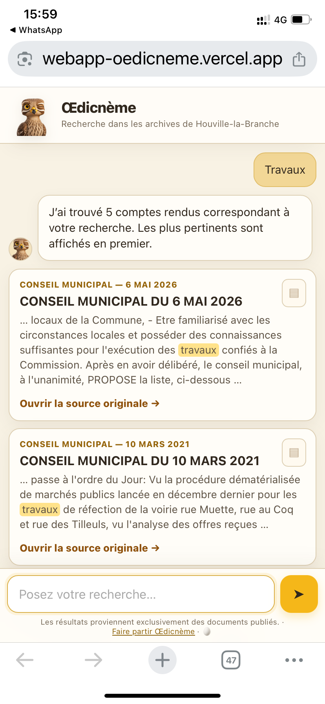

Pour les communes d'aujourd'hui.
Mairie Diffusion se greffe sur votre site existant, même s'il est ancien. Pas de refonte, pas de nouvel outil à alimenter.
Les informations publiées sur votre site communal sont automatiquement relayées via WhatsApp. Pas de double saisie : vous continuez à publier comme aujourd'hui.
Bulletins et comptes rendus, même anciens ou scannés, deviennent consultables par mot-clé, avec accès au document d'origine.
Vous publiez une actualité sur votre site communal comme aujourd'hui. Mairie Diffusion la relaie automatiquement via WhatsApp à vos habitants.
Aucun numéro de téléphone à saisir ou à gérer.
Les habitants choisissent eux-mêmes de suivre le canal de diffusion de leur mairie, simplement en scannant un QR code publié sur le site communal ou affiché en mairie.
Une publication. Pas de double saisie. Pas de fichier d'habitants à maintenir.
1. Vous publiez comme aujourd'hui

2. Vos habitants sont informés


Une publication. Pas de double saisie. Pas de fichier d'habitants à maintenir.
Les habitants choisissent eux-mêmes de suivre le canal de leur mairie.

Œdicnème — module optionnel de recherche documentaire
Un habitant recherche « travaux ».
En quelques secondes, Œdicnème retrouve les documents qui en parlent, affiche le passage correspondant et permet d'ouvrir le document original.
Les documents restent ceux de la commune.
Œdicnème travaille uniquement à partir des documents déjà publiés par la commune. Il en facilite l'accès et la recherche.
Ce module est optionnel. Il peut être activé, par exemple, pour les comptes rendus du conseil municipal et les bulletins municipaux déjà publiés sur votre site.
Les couleurs et la mascotte peuvent être adaptées à l'identité de votre commune.
Votre site reste en place, même ancien. Les nouvelles publications sont récupérées automatiquement. Pas de refonte, pas de formation, pas de saisie en double.
Pas de fichier d'habitants, pas de numéros collectés, pas de compte à créer, pas de cookie. Conformité RGPD par conception : il n'y a rien à protéger, puisque rien n'est collecté.
La recherche fonctionne par correspondance de mots. Rien n'est reformulé ni interprété : vos textes sont montrés tels quels. Plus fidèle, et bien plus sobre en énergie.
Développé et exploité depuis l'Eure-et-Loir.
Le service fonctionne aujourd'hui sur une commune d'Eure-et-Loir. Interrogez ses archives réelles depuis votre téléphone.
Œdicnème — la recherche documentaire de Mairie Diffusion
Essayer la recherche